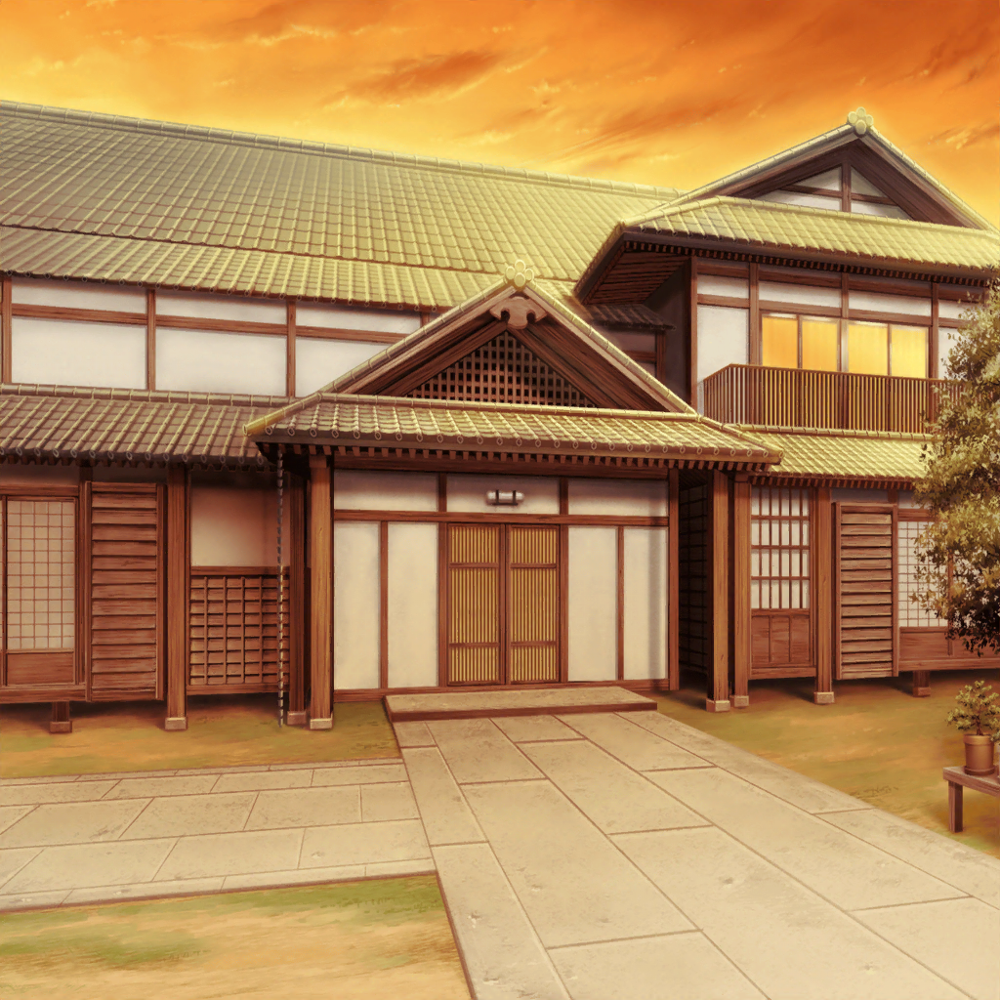
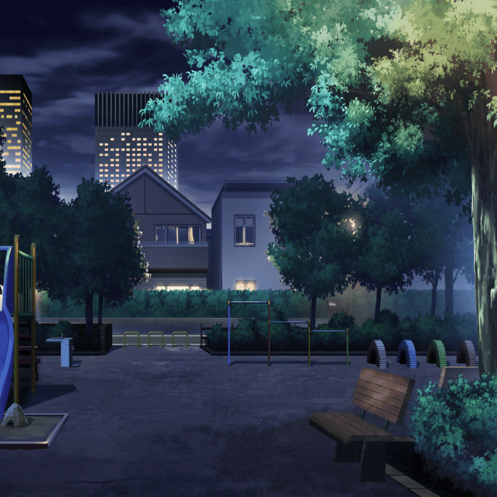

市ヶ谷家
香澄
……有咲！
有咲
か、香澄……
香澄
有咲……おかえり
有咲
てか、２人とも……
ずっとここで待ってたのかよ……？
沙綾
香澄が、どうしても有咲と話……したいって
有咲
別に……話すことなんてねーから
香澄
そんなわけないじゃん！
隠したってわかるよ！ 有咲……悩んでるんだよね？
私達に話してよ！ 力に……なりたいよ！
有咲
しつけーな！ なんもねーつってんだろ！？
私のことはもう放っておいてくれよ！
香澄
放っておけるわけないじゃん！
有咲に話すことがなくたって、
私には有咲に話したいことがたくさんあるの！
有咲
……？
香澄
昨日見たテレビの話とか、コンビニで買った美味しい
お菓子の話とか……洋服の話だってしたいし、
勉強の話も、お弁当の話も……ポピパの話もしたいの！
香澄
私にはね、話したいことがたくさんあるんだよ！
有咲に聞いてもらいたい話がたくさんあるの！
有咲
つ、つーか、何が言いたいんだよ！？
全然わかんねーよ！
香澄
私だってわかんない！ ただ学校でもっと有咲と
お喋りしたいよ！ 一緒にどうでもいい話で笑い合いたい！
一緒に……お弁当食べたいの
有咲
そ、そんなのしらねーよっ！
香澄
〜〜〜〜〜っ！！
有咲、手、出して！
有咲
は、はぁ！？
香澄
だって私、うまく言葉にできないから！
手、つなげばきっと気持ちは伝わるから！
有咲
な、何言ってんだよ！？
香澄
ごめんね！
だって私、こうするしかできないんだもん！
有咲、手！
有咲
や、やめろって！
そういうの苦手だって知ってんだろ！？
だ、だから……っ！
香澄
有咲に伝われ……っ！
えいっ……えいっ……！
有咲
い、いってーなーっ！
そんな強く――
有咲
（ん？ この感じ――）

公園
有咲
……つーか、いってーな。
まだジンジンしてるし……
ホント強く握りすぎだって……
香澄
つ、つい気持ちを込めすぎちゃって……
有咲
……てか、ギターで握力ついてんだから、
ちょっとは加減しろって……
香澄
ホント……ごめんね……
有咲
……けど、あの感触は、おたえと一緒だったよ
香澄
え？
有咲
手を握られた時の感じが、
おたえに握られたのと全く同じだった
香澄
おたえと？
有咲
うん。わかんねーよな？
けど、なんかそんな感じがしたんだ……
有咲
……あのさ。前に私、先生に呼び出されたことあったろ？
確か、みんなでお弁当食べてる時……
香澄
うん。
有咲が生徒会長をやってくれって言われるんじゃないかって、
みんなで話したよね？
有咲
あの時さ、実は言われちゃったんだよ、先生に……
沙綾
言われちゃった……？ なんて？
有咲
最近、成績が落ちてきてるって……
香澄
……え？
有咲
ま、考えてみれば当然でさ、
バンドを始めていっつもみんなで一緒にいただろ？
だから、勉強する時間も実際ちょっと減ってて……
有咲
自分でもこのままじゃちょっとヤバいかな、
とは思ってたんだけど、お前らといると――
有咲
やっぱり楽しくってさ……
沙綾
有咲……
有咲
で、先生が言うわけ。
勉強とバンドの両立は難しいんじゃないか？ って
有咲
なんか私、ついカチンときて……
先生に、宣言しちゃったんだ
有咲
絶対に勉強もバンドも両立してみせるって。
今度のテスト、５科目の合計が480点以上とれなかったら、
バンドをやめてやる、って……
沙綾
よ、480点！？
それって、いくら有咲でも厳しくない？
有咲
……けど、それくらいやらないと説得力ねーだろ？
だから、結構気合い入れて勉強してたんだよ。
そしたら、毎日寝るのが遅い時間になっちゃって……
沙綾
そういえば有咲、ちょっと眠そうにしてたもんね……
そういうことだったんだ
有咲
やっぱ高校の勉強って、
中学の時とはちょっと違って、やらないとできないからさ
香澄
……なんで？
そんな大事なこと、どうして言ってくれなかったの？
有咲
……カッコ悪いだろ？
私が意地張って、みんなを巻き込んじゃったわけだし……
有咲
それに……頑張って勉強してるところとか、
夜遅くまで努力してるところとか？
そういうの、あんまりみんなには見せたくなくてさ……
香澄
有咲……違うよ、有咲。
私達、有咲が頑張ってるところ何回も見てる！
有咲が努力してるところ、今までずっと見てきてる！
香澄
有咲、いっつも頑張って、努力して――
楽器の練習してるじゃん
有咲
……っ！？
沙綾
……うん、そうだよ。
有咲、いつも楽器の練習、頑張ってる。知ってるよ
有咲
……はは、そっか……
隠す必要、なかったのか……
なーんだ、必死に隠して損しちゃった……逆にダサっ……
有咲
……しかも、それが原因で、勝手に追い込まれてっ。
イライラして、りみにあたっちゃったりしてさ……
有咲
サイテーだな……
何やってんだよ、私って……っ！
ホント、カッコわりーな……
有咲
……私なんてポピパにいない方が、いいのかもな――